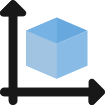
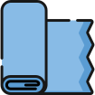

Дизайн проект клієнта
Виготовимо меблі та предмети інтерєру згідно дизайн проекту замовника.Співпраця з дизайнерами вітається.

Будь-який розмір
Виготовлені для Вас меблі будуть потрібних саме Вам розмірів.

Будь-який колір
Величезний вибір шкіри, тканин, екошкіри виробництва Італії, Бельгії, Польщі, Туреччини. Завдяки розмаїттю кольорів, текстур та принтів - задовольнить навіть самі вибагливі смаки.

Матеріал
Каркаси виготовляються з фанери та дерева.В якості наповнення- пінополіуретан Флексформ,високоякісні синтепух та холофайбер.Ніякої економії на якості та комфорті!